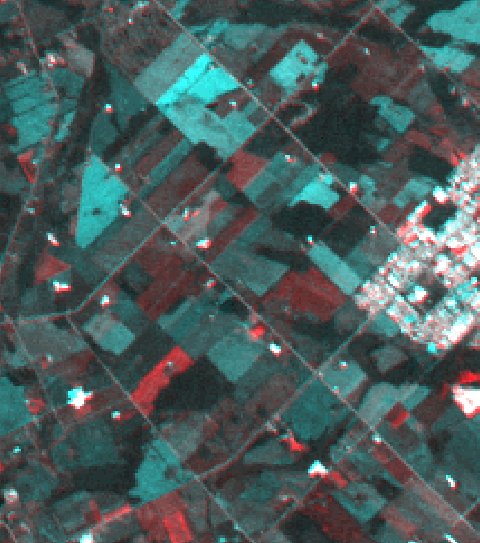

Jensen (2005) describes write function memory (WFM) insertion as a simple yet effective method of visualizing land-cover change between two or three dates. WFM insertion any be used to qualitatively inspect change in any type of registered, multi-date imagery. The technique operates by creating a red-green-blue (RGB) colour composite image based on co-registered imagery from two or three dates. If two dates are input, the first date image will be put into the red channel, while the second date image will be put into both the green and blue channels. The result is an image where the areas of change are displayed as red (date 1 is brighter than date 2) and cyan (date 1 is darker than date 2), and areas of little change are represented in grey-tones. The larger the change in pixel brightness between dates, the more intense the resulting colour will be. An example of a WFM insertion image derived from Landsat imagery of two dates is provided below:

If images from three dates are input, the resulting composite can contain many distinct colours. Again, more intense the colours are indicative of areas of greater land-cover change among the dates, while areas of little change are represented in grey-tones. Interpreting the direction of change is more difficult when three dates are used. Note that for multi-spectral imagery, only one band from each date can be used for creating a WFM insertion image.